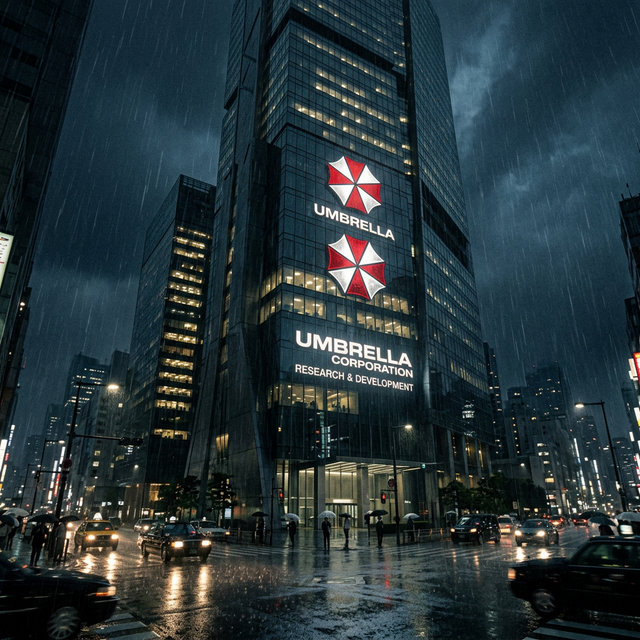

Perusahaan yang menjual obat kepada dunia sambil menciptakan senjata di kegelapan.
Umbrella Corporation — nama resmi: Umbrella Pharmaceuticals, Inc. — didirikan pada tahun 1968 oleh tiga tokoh utama: Oswell E. Spencer, Edward Ashford, dan James Marcus. Berkantor pusat di Eropa, dengan markas operasional Amerika di kota Raccoon City, Umbrella menampilkan dirinya kepada publik sebagai raksasa farmasi yang bertanggung jawab atas penemuan beberapa obat-obatan penting abad ke-20.
Kenyataannya jauh berbeda. Umbrella Corporation adalah selubung untuk program penelitian senjata biologis yang paling ambisius dan paling berbahaya dalam sejarah modern. Semua keuntungan dari lini farmasi mereka yang sah — yang mencapai miliaran dolar per tahun — digunakan untuk membiayai eksperimen rahasia yang dilakukan di fasilitas-fasilitas yang tersembunyi di bawah tanah.

↑ Kantor pusat Umbrella Corporation — fasad modern yang menyembunyikan operasi yang paling gelap dalam sejarah korporasi.Visioner di balik Umbrella. Percaya bahwa umat manusia perlu "direvolusi" dengan virus untuk menciptakan ras superior. Seluruh program T-Virus lahir dari ambisi megalomaniak-nya.
Bapak T-Virus yang sesungguhnya. Marcus mengembangkan Progenitor Virus menjadi T-Virus sebelum dibunuh oleh rekannya sendiri untuk menghilangkan jejak. Ia "bereinkarnasi" tahun 1998 dengan cara yang tidak terduga.
Jenius yang mengembangkan G-Virus. Ketika Umbrella mencuri karyanya, ia menyuntik dirinya sendiri dengan G-Virus dalam keputusasaan. Metamorfosanya menjadi salah satu ancaman terbesar yang dihadapi penyintas Raccoon City.
Agen ganda yang bekerja untuk Umbrella sambil menyabotase mereka dari dalam. Memanfaatkan kekacauan Raccoon City untuk kepentingan pribadinya. Menjadi ancaman global selama satu dekade setelah kejatuhan Umbrella.
Ironisnya, bencana Raccoon City — yang seharusnya menjadi puncak demonstrasi kemampuan Umbrella kepada calon klien militer mereka — justru menjadi awal kejatuhan korporasi itu. Terlalu banyak eyewitness, terlalu banyak penyintas, dan terlalu banyak bukti digital yang berhasil diselamatkan sebelum kota dihancurkan.
Selama enam tahun setelah insiden, Umbrella berjuang di pengadilan internasional melawan gugatan yang terus bertambah. Saham mereka runtuh ketika rekaman internal — yang membuktikan keterlibatan langsung eksekutif puncak dalam pengembangan senjata biologis — bocor ke media pada 2003.
Pada 2004, pengadilan internasional secara resmi membubarkan Umbrella Corporation dan menyegel seluruh aset mereka. Namun teknologi mereka — dan orang-orang yang menyimpannya — tidak bisa dibubarkan semudah kertas pengadilan.